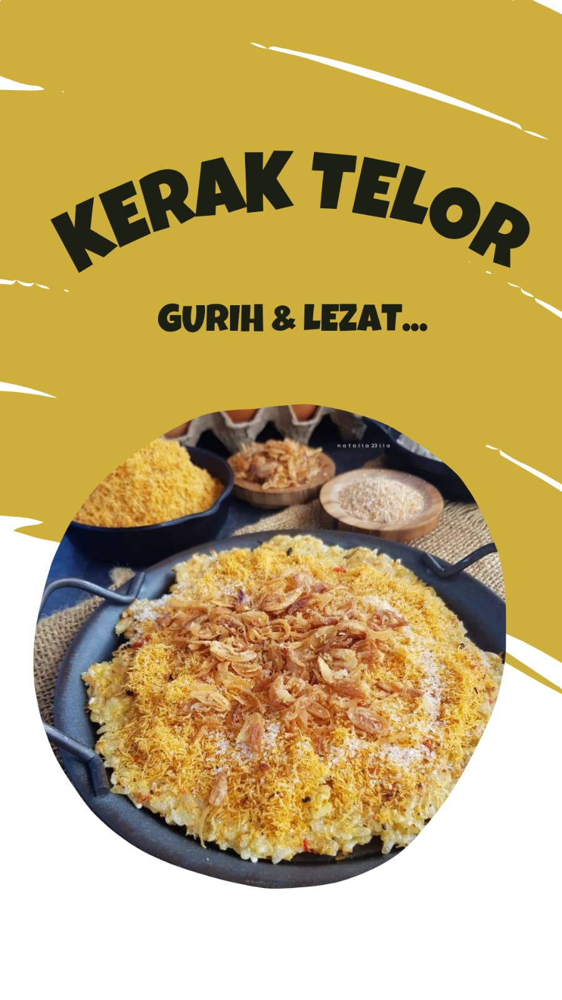
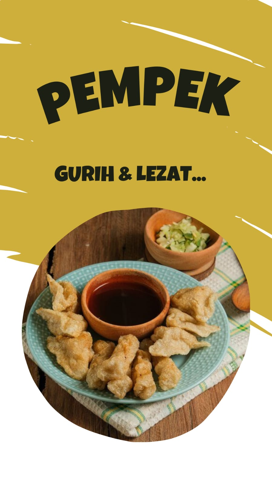

Kerak telor adalah makanan tradisional asli daerah Jakarta (Betawi), yang terbuat dari bahan-bahan beras ketan putih, telur ayam atau bebek. Lalu dicampurkan dengan ebi (udang kering yang diasinkan) yang disangrai kering ditambah bawang merah goreng, lalu diberi bumbu yang dihaluskan berupa kelapa sangrai, cabai merah, kencur, jahe, merica butiran, garam dan gula pasir.
Go somewherePempek atau empek-empek adalah makanan yang terbuat dari daging ikan digiling lembut dan dicampur tepung kanji atau tepung sagu, serta dikombinasikan dengan beberapa bahan lain seperti telur, bawang putih yang dihaluskan, penyedap rasa, dan garam.
Go somewhereMi Bangka, atau dikenal sebagai bakmi Bangka adalah salah satu hidangan tradisional masyarakat pulau Bangka. Mi bagi masyarakat Bangka dikenal dengan sebutan mien dan mian, yang merupakan pengaruh dari kuliner orang Hakka. Seiring dengan merantaunya orang Bangka ke berbagai daerah, hidangan mi khas Bangka tersebar di banyak daerah Indonesia.
Go somewhere